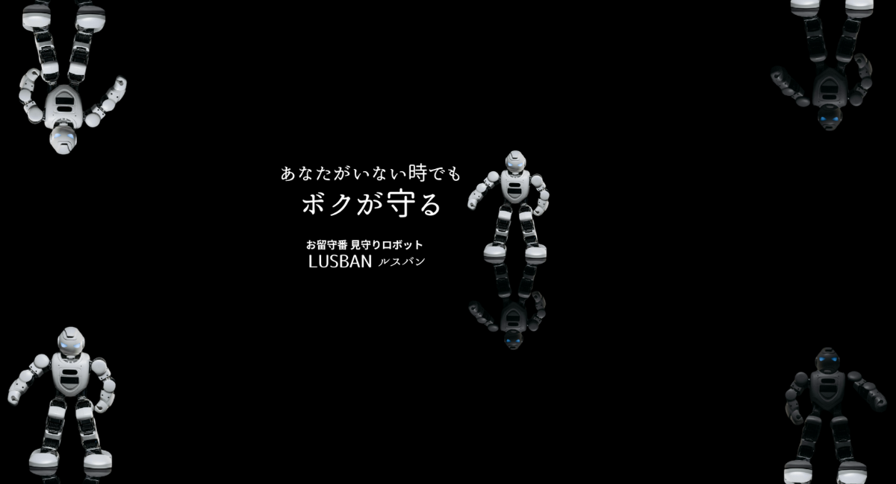
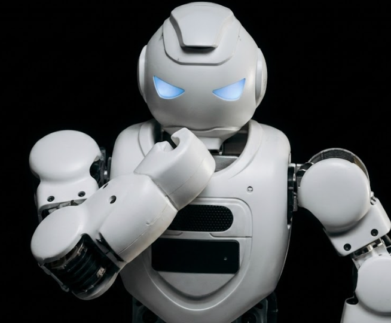
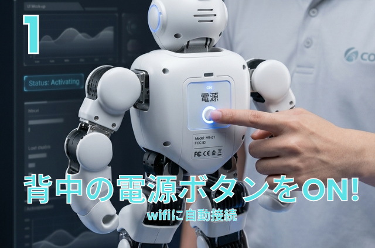
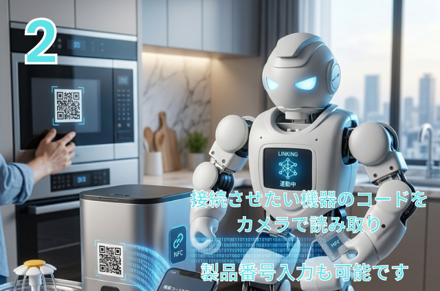
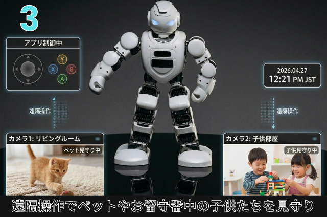

LUSBANとは?
時代の最先端を行く超高画質のセンサー付きロボット！LUSBANが居れば、おウチの戸締り、電化製品の電源の付け忘れも消し忘れも遠隔操作で全て解決！内蔵されている360°高画質カメラを使えばペットや子供の見守りも、全て解決します！初期設定の際、対応させたい物を選ぶだけでOK!!空き巣や泥棒などの不審者が現れた場合、防犯システムにより自動で通報もできます。


時代の最先端を行く超高画質のセンサー付きロボット！LUSBANが居れば、おウチの戸締り、電化製品の電源の付け忘れも消し忘れも遠隔操作で全て解決！内蔵されている360°高画質カメラを使えばペットや子供の見守りも、全て解決します！初期設定の際、対応させたい物を選ぶだけでOK!!空き巣や泥棒などの不審者が現れた場合、防犯システムにより自動で通報もできます。

背面のボタンを押すだけで簡単に起動！Wi-Fiにもスマホで簡単に接続できます。

専用アプリのカメラ機能を活用して接続させたい機器のコードを読み取り、連動が可能です。
*接続させたい機器の製品番号を手動入力し連動もできます*

内蔵されている360°高画質カメラを使えばペットや子供の見守りも、全て解決します！初期設定の際、対応させたい物を選ぶだけでOK!!空き巣や泥棒などの不審者が現れた場合、防犯システムにより自動で通報もできます。
さらに電化製品の電源の付け忘れも消し忘れも遠隔操作で全て解決！